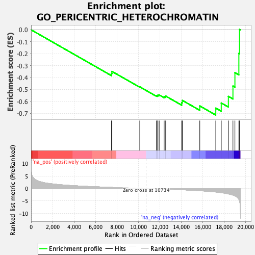

| | | Dataset | PFS |
| Phenotype | NoPhenotypeAvailable |
| Upregulated in class | na_neg |
| GeneSet | GO_PERICENTRIC_HETEROCHROMATIN |
| Enrichment Score (ES) | -0.71452975 |
| Normalized Enrichment Score (NES) | -2.0797899 |
| Nominal p-value | 0.0 |
| FDR q-value | 0.099896535 |
| FWER p-Value | 0.191 |
Table: GSEA Results Summary

Fig 1: Enrichment plot: GO_PERICENTRIC_HETEROCHROMATIN
Profile of the Running ES Score & Positions of GeneSet Members on the Rank Ordered List
| SYMBOL | RANK IN GENE LIST | RANK METRIC SCORE | RUNNING ES | CORE ENRICHMENT | | 1 | SNAI1 | 7500 | 0.468 | -0.3654 | No |
| 2 | IKZF1 | 7540 | 0.461 | -0.3485 | No |
| 3 | LRWD1 | 10134 | 0.086 | -0.4779 | No |
| 4 | BAZ1B | 11683 | -0.133 | -0.5519 | No |
| 5 | CENPA | 11809 | -0.152 | -0.5521 | No |
| 6 | ATRX | 11826 | -0.154 | -0.5466 | No |
| 7 | CENPC | 11944 | -0.174 | -0.5455 | No |
| 8 | INCENP | 12409 | -0.247 | -0.5592 | No |
| 9 | CBX3 | 12550 | -0.272 | -0.5553 | No |
| 10 | CBX5 | 14044 | -0.526 | -0.6103 | No |
| 11 | KDM4D | 14103 | -0.535 | -0.5915 | No |
| 12 | NCAPD3 | 15731 | -0.901 | -0.6380 | No |
| 13 | KMT5C | 17224 | -1.419 | -0.6565 | Yes |
| 14 | KDM4C | 17734 | -1.696 | -0.6133 | Yes |
| 15 | ESCO2 | 18397 | -2.189 | -0.5578 | Yes |
| 16 | CENPB | 18824 | -2.663 | -0.4708 | Yes |
| 17 | CBX1 | 19008 | -2.966 | -0.3590 | Yes |
| 18 | HELLS | 19376 | -4.403 | -0.1979 | Yes |
| 19 | DNMT1 | 19436 | -5.028 | 0.0045 | Yes |
Table: GSEA details [plain text format]
Fig 2: GO_PERICENTRIC_HETEROCHROMATIN: Random ES distribution
Gene set null distribution of ES for GO_PERICENTRIC_HETEROCHROMATIN